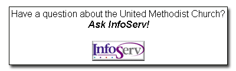

|
InfoServ Downloads Download an InfoServ Flyer United Methodist groups, including local churches, may reprint as many copies of the flyer as needed to distribute to their members. Please be aware that you will need adobe acrobat to download the flyer. [download flyer now] Download InfoServ logos To save a copy of the InfoServ logo please right (or Ctrl) click on the desired resolution, then select "Save Target As..." (May also be "Save Link As...", or "Download Image to Disk...").
Add InfoServ to your Web site Now you can add an "Ask InfoServ" Web graphic to your church Web site. When visitors click on the graphic, they will have quick access to The United Methodist Church's official information service.
 To add the Ask InfoServ graphic to your Web site, copy and paste the following code into your web page:
|
 UMC.org
is the official online ministry of The United Methodist Church. UMC.org
is the official online ministry of The United Methodist Church.© 2023 United Methodist Communications |